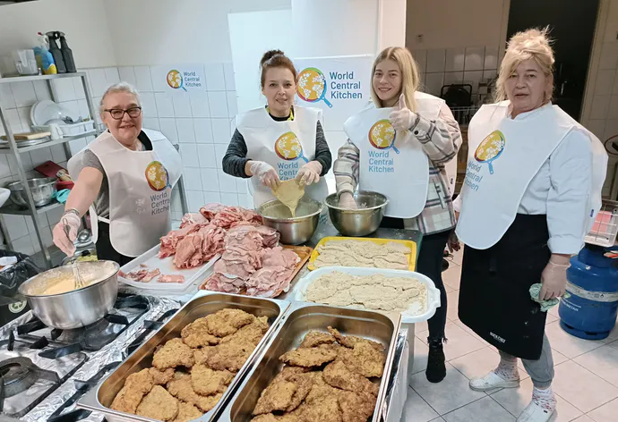
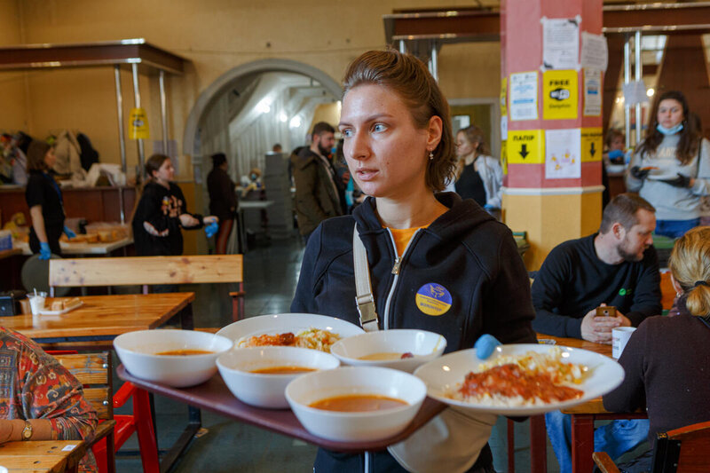
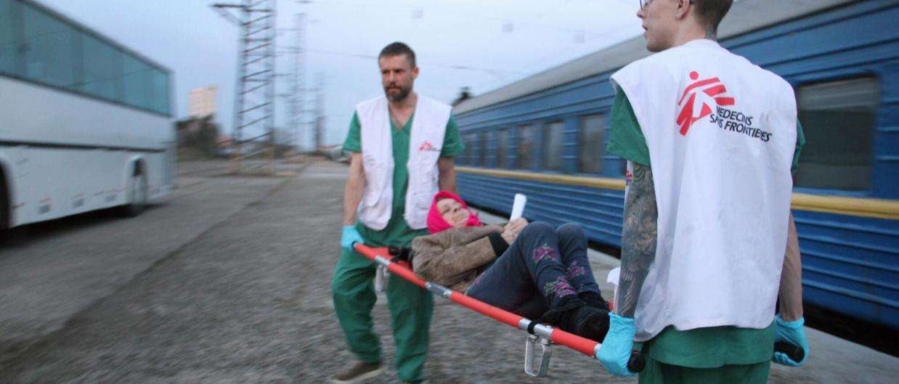
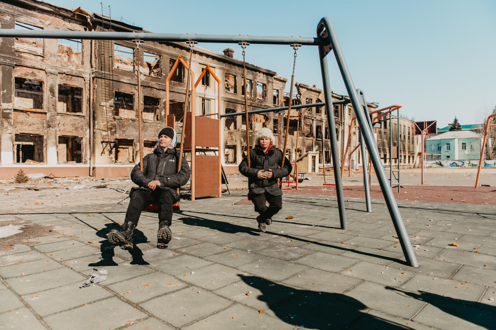
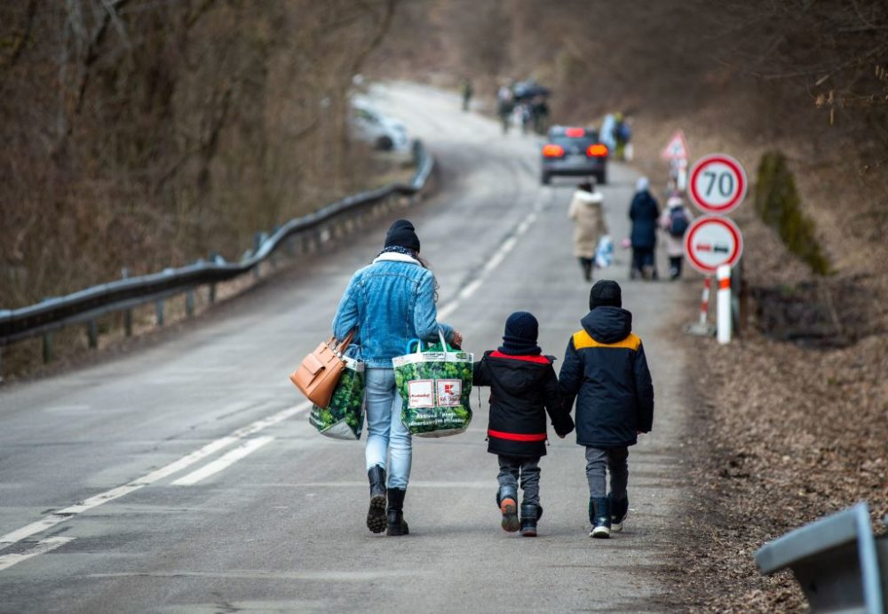
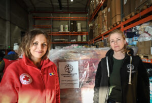
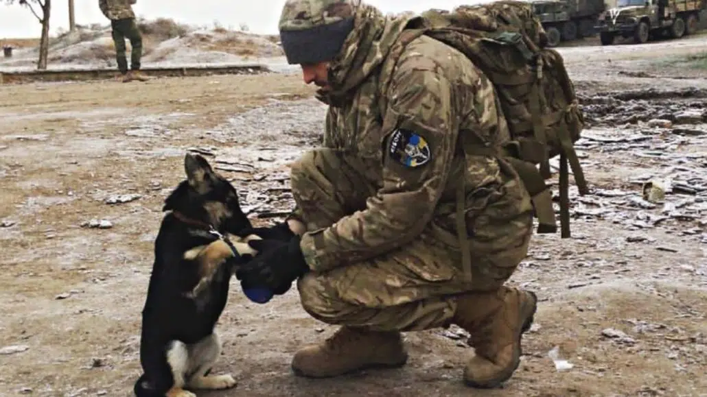

Types of Aid
Ukraine food crisis
World Central Kitchen
WCK uses the power of food to nourish communities and strengthen economies in times of crisis and beyond. When disaster strikes, WCK’s Chef Relief Team mobilizes to the front lines with the urgency of now to start cooking and provide meals to people in need. WCK’s resilience work advances human and environmental health, offers access to professional culinary training, creates jobs, and improves food security for the people we serve.
World Central Kitchen
UN World Food Program
Conflict is the main driver of hunger and food insecurity in the world. WFP is on the ground inside Ukraine and neighboring countries to provide critical food assistance to those affected by this devastating war. In one month, WFP provided ready-to-eat food, bread and cash assistance to 1 million people affected by the war. We aim to reach 6M people inside Ukraine and 300,000 Ukrainians in neighboring countries.
UN World Food ProgramRefugee Crisis

ICRC
The ICRC has been working in Ukraine since 2014. Our operations in the country are among the ten largest ICRC operations worldwide with a team of over 600 staff members. Working closely with the Ukrainian Red Cross Society, we are increasing our response to the humanitarian needs in Ukraine. Our support to people includes emergency assistance such as food, water, and other essential items. We also support hospitals and primary healthcare facilities with medical equipment and emergency preparedness. We repair water stations and support households to rehabilitate their damaged homes. We also help families separated by the conflict reconnect.
ICRCHealthcare Crisis
MSF/ Doctors Without Borders
MSF has a longstanding presence in Ukraine, including in parts of the eastern region that have been affected by armed conflict since 2014. A large part of our work in Ukraine from 2014 to 2021 was responding to the needs of patients with HIV, tuberculosis, or other chronic illnesses. Due to the current war, we have halted normal activities and have started emergency activities in Ukraine. We currently have teams in Kyiv, Lviv, Vinnytsia, Zhytomir, Dnipro, Kharkiv, Odessa, Mykolaiv, Poltava, Bila Tserkva, Uzhhorod and Ivano-Frankivsk. We also have teams in Poland, Moldova, Hungary, Slovakia, Russia, and Belarus. MSF is an independent and impartial organization committed to providing medical humanitarian assistance to people affected by the war no matter who they are or where they are.
MSF staff in Ukraine are delivering urgent medical supplies, training health workers on managing mass casualty incidents, running mobile clinics, and organizing medical evacuations of hospitalized patients from the east to the west of the country.
Human Trafficking
UNICEF
The past eight years of conflict in Ukraine have already inflicted profound and lasting harm on children. Now, the threats to Ukraine’s children have only grown. By 8 May, more than 5.8 million refugees had fled Ukraine, around half of them children. Millions more people have been internally displaced. Such large-scale displacements could have lasting consequences for generations to come. Children fleeing war in Ukraine are also at heightened risk of human trafficking and exploitation. Meanwhile, attacks using explosive weapons in populated urban areas continue to inflict civilian casualties including among children, and considerable damage to essential infrastructure and services. As a result, children’s homes, schools, hospitals, water systems, power plants, and places where civilians are seeking shelter have been damaged or destroyed.
UNICEF
Hope For Justice
More than 70 of the world’s leading anti-trafficking organizations have come together to condemn Russia’s invasion of Ukraine and the impact it is having on the risk of human trafficking in the region.
Hope For JusticeAnimals and Pets
Humane Society International
Advancing the welfare of animals in more than 50 countries, Humane Society International works around the globe to promote the human-animal bond, rescue and protect dogs and cats, improve farm animal welfare, protect wildlife, promote animal-free testing and research, respond to natural disasters and confront cruelty to animals in all of its forms.
Humane Society International
Network for Animals
The international nonprofit Network for Animals, which has offices in the United Kingdom and the United States, quickly partnered with local groups to evacuate nearly 1,000 dogs and cats from Ukraine since the Russian invasion.
Network for Animals